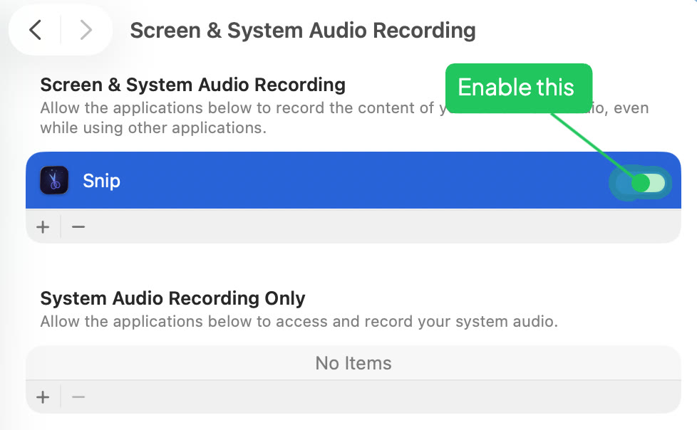
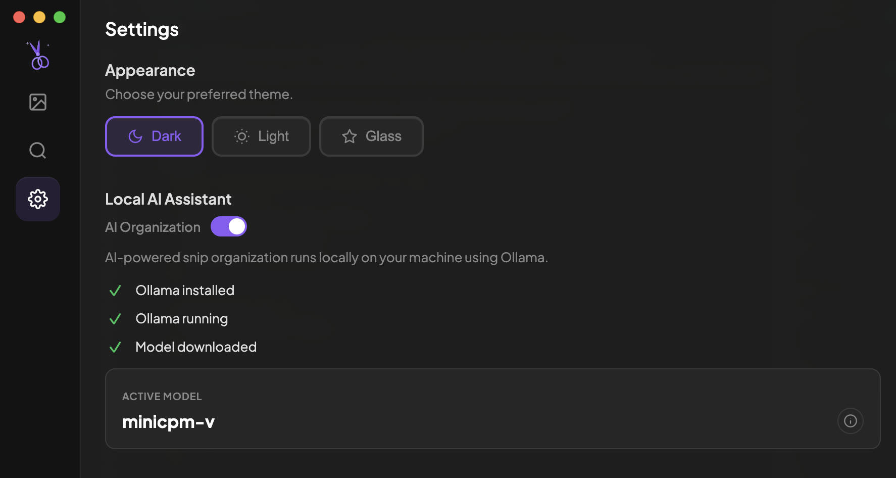

First Launch
Snip sets itself up automatically
When you open Snip for the first time, it walks you through everything — permissions, AI setup, and model downloads. Most users won't need the manual steps below.
Screen Recording permission (macOS)
Snip asks you to allow Screen Recording. Click Allow, grant permission in the macOS dialog, then Restart Snip when prompted. On Linux, this step is skipped — no permission is needed.
Choose save location
Pick where Snip saves your screenshots. The default is ~/Documents/snip/screenshots. You can change this later in Settings.
Install the CLI
Snip offers to install the snip command-line tool so AI agents (like Claude Code) can capture, search, and render visuals. Click Install to add it to your PATH.
Ready to go
You land on the Welcome screen. Use the global shortcut to take your first snip.
Save location, CLI, AI, and all other options can be accessed and toggled in Settings at any time.
Screen Recording
Required — this is how Snip captures your screen
See First Launch above. The steps below are for manual troubleshooting only.

macOS requires Screen Recording permission for any app that captures your screen.
Manual setup
Open System Settings
Go to System Settings → Privacy & Security → Screen Recording.
Enable Snip
Find Snip in the list and toggle it on.
Restart Snip
Quit and reopen Snip to apply the permission.
macOS 15+ may silently return blank images if this permission isn't granted. Make sure to restart Snip after enabling it.
Check that no other app is using the same shortcut in System Settings → Keyboard → Keyboard Shortcuts.
Linux Setup
Wayland-specific configuration for Linux users
Unlike macOS, Linux does not require a separate screen recording permission. Snip uses Electron's desktopCapturer, which works automatically on Wayland.
Recommended packages
Install wl-clipboard
Required for clipboard persistence on Wayland. Without it, copied images are lost when the editor closes.
sudo apt install wl-clipboard
Install PyGObject (optional)
Enables portal-based screenshot fallback via D-Bus.
sudo apt install python3-gi gir1.2-glib-2.0
Install Ollama (for AI features)
On Linux, Ollama must be installed manually (auto-install is macOS only).
curl -fsSL https://ollama.com/install.sh | sh
Snip targets Wayland sessions. X11 may work but is not officially supported. GNOME on Wayland is the recommended environment for full shortcut and clipboard support.
The OCR/Transcribe feature uses macOS Vision framework and is not available on Linux.
Files & Folders
Where Snip saves your screenshots
Screenshots save to ~/Documents/snip/screenshots/. Created automatically on first save.
If saves fail, check System Settings → Privacy & Security → Files & Folders and ensure Snip has access to the Documents folder.
AI Setup Optional
Automatic naming, tagging, and search
See First Launch above. The steps below are for manual setup if the automatic install fails.

Snip works without AI. Enable it for automatic naming, tagging, and semantic search.
Manual setup
Install Ollama
Download Ollama and install it. All AI runs locally on your Mac.
Open Snip Settings
Click the Snip menu bar icon → Settings. Snip will detect Ollama and download the model.
Start organizing
Snip will auto-name, tag, and categorize every screenshot. Search with Cmd+Shift+S.
Everything runs on-device via Ollama. No data leaves your Mac.
CLI Setup Recommended
Let AI coding tools use Snip via the command line
The snip CLI gives AI coding tools (Claude Code, Cursor, Windsurf, Cline) direct access to Snip — search your library, extract text, open images for annotation. Lower latency and token cost than MCP. Auto-launches Snip if not running.
Install the CLI
Open Snip Settings → AI Workflow Integration → click Install CLI. This adds the snip command to your terminal.
Configure your AI tool
After installing, Snip detects which AI tools you have. Click Configure next to each one. This tells your AI to use snip for image editing.
Try it
In your terminal: snip list to see your screenshots, or snip open image.png to open the editor. In your AI tool, ask it to "annotate this image" — it will use Snip automatically.
snip open (annotate), snip search (find), snip list (browse), snip transcribe (OCR), snip organize (categorize), snip categories, snip --help
MCP Server Alternative
For clients that can't run CLI commands (e.g., Claude Desktop)
Most AI coding tools work better with the CLI above. Use MCP only if your client can't run shell commands — for example, Claude Desktop's web-based interface.
Show the MCP config
Open Snip Settings → AI Workflow Integration → MCP Server → toggle it on to reveal the config.
Copy the config
Click Copy next to the JSON snippet.
Add to Claude Desktop
Paste the snip entry into ~/Library/Application Support/Claude/claude_desktop_config.json under mcpServers.
User extensions can be installed via Settings → Install from Folder or by AI agents via the MCP install_extension tool. They run in a sandboxed child process and require your approval before installation.
Quick Reference
All permissions at a glance